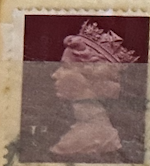
| SOURCE | TITLE| IMAGE MATCH | click to source page |
| Find Your Stamps Value | Value of queen elizabeth australia 5d stamps | 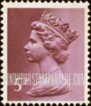 |
| Find Your Stamps Value | Value of queen elizabeth 7p stamps | 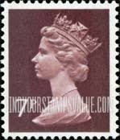 |
| Find Your Stamps Value | Value of queen elizabeth 1p stamps | 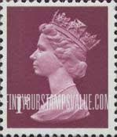 |
| benaclothing.com | Queen brooch / coronation crown | Bena | 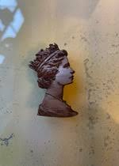 |
| chilliant.com | Machin Postage Stamps - chilliant.com | 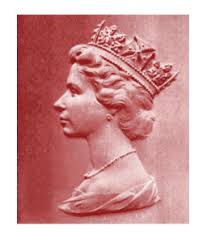 |
| eBay | UK 1984-85 TWO BOOKLETS Queen Victoria 1S VALUE FIRST ISSUED 1856 20 STAMPS MNH | eBay | 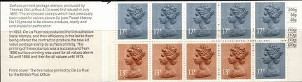 |
| Find Your Stamps Value | Great Britain (United Kingdom): Machin Definitives - Queen Elizabeth 5p Brown stamp price, value | 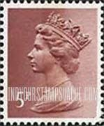 |
| Find Your Stamps Value | Value of queen elizabeth 5d stamps | 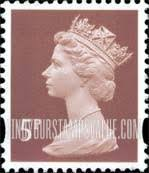 |
| eBay | GB178) 1977 Great Britain Queen Elizabeth II Two Pounds Brown | eBay Australia | 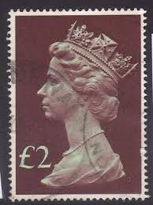 |
| Find Your Stamps Value | Great Britain (United Kingdom): Machin Definitives - Queen Elizabeth 9p Violet blue stamp price, value | 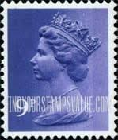 |
| eBay UK | Lightly Hinged Great Britain Postal Stamp & Cover Collections & Mixtures for sale | eBay UK | 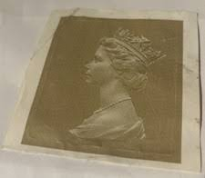 |
| Find Your Stamps Value | Value of queen elizabeth 6d stamps | 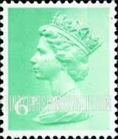 |
| PicClick | 🧭 🇬🇧 UK GB FATTORINI & SONS BRADFORD 1831 TOKEN 25mm B66 #K1387. $38.30 - PicClick | 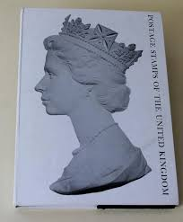 |
| X | Bill Smith (@cableguy39) / Posts / X | 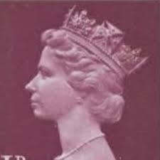 |
| Ellen SS (EllenSecretSpa) - Profile | Pinterest | 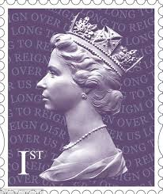 | |
| slyart.co.uk | Prints/posters by Urban Pop artist Juan Sly | 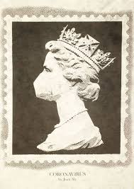 |
| Find Your Stamps Value | Value of queen elizabeth machin definitives 41p stamps | 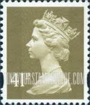 |
| Find Your Stamps Value | Value of queen elizabeth 31p stamps | 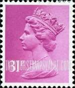 |
| HipStamp | Great Britain-1970 Queen Elizabeth II- Machins Used 1 Pound Large Size VF | Great Britain, Stamp / HipStamp | 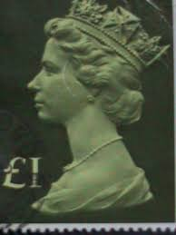 |
| HipStamp | Great Britain Sg-Y1753, Scott # Mh216 Machin Used, 100 Stamps, Great Price! | Great Britain, Stamp / HipStamp | 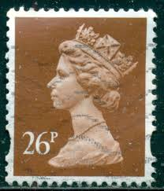 |
| Find Your Stamps Value | Value of queen elizabeth 39p stamps | 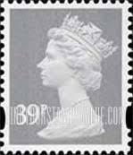 |
| Find Your Stamps Value | Value of queen elizabeth 26p stamps | 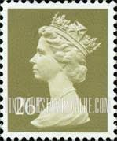 |
| Art History News | The best royal portraits - Art History News - by Bendor Grosvenor | 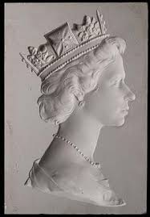 |
| zeboose.com | Great Britain – ZEBOOSE.COM | 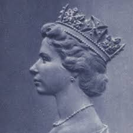 |
| collectorsclub.org | THE MACHIN SERIES: 1971-1993 | 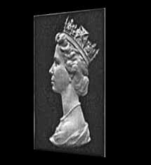 |
| How to create this postage stamp effect? : r/PhotoshopTutorials | 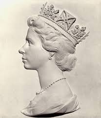 | |
| Rare plaster cast that put the Queen's head on stamps has been found and could fetch £10,000 at auction | 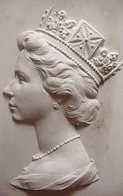 | |
| Collect GB Stamps | Collecting Decimal Machins Part 1 | 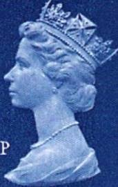 |
| 13 Queen elizabeth ideas in 2026 | queen elizabeth, elizabeth, elizabeth ii | 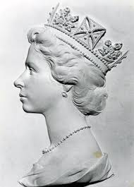 | |
| Find Your Stamps Value | Value of queen elizabeth 50p stamps | 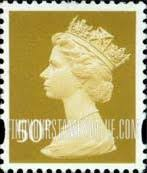 |
| End of an age. Rest in Peace our Elizabeth | 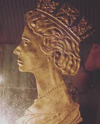 | |
| Find Your Stamps Value | Wert von queen elizabeth 7p Briefmarken | 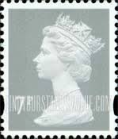 |
| Find Your Stamps Value | Great Britain (United Kingdom): Machin Definitives - Queen Elizabeth II 49p Brown stamp price, value | 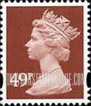 |
| WordPress.com | 500 years of the Royal Mail | London Historians' Blog | 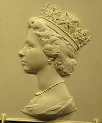 |
| Collect GB Stamps | 20C PS 6 Elizabeth II Decimal Issues | 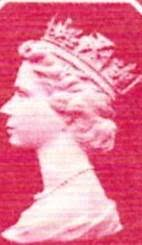 |
| YouTube | Classic - YouTube | 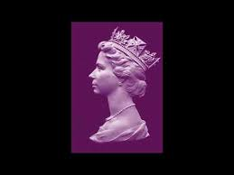 |
| Philatelink | Buying Prices – Philatelink | 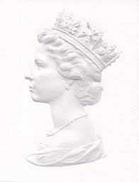 |
| WorthPoint | Interesting Book of Great British POSTAGE STAMPS OF QUEEN ELIZABETH II - ID R24 | #938036795 | 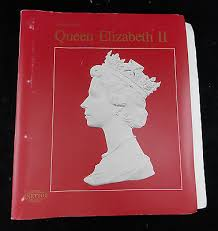 |
| eBay Australia | GREAT BRITAIN MH175 (SG1027) - QEII "1977 Maroon and Light Green" (pc25383) | eBay Australia | 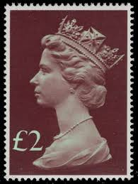 |
| eBay | GB 1991/92 Yvert C 606e-1 50p booklet 2 x 1p + 2 x 24p Giza Temples | eBay | 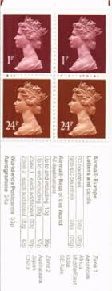 |
| Linns Stamp News | When your U.S. collection stalls, look for Canal Zone stamps: Tip of the week | 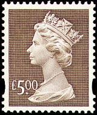 |
| There are many things in life that you think will always be there because they always have been during our life (like the image of the Queen on UK stamps). I think | 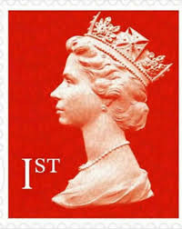 | |
| Collect GB Stamps | pb4304 PHQ Stamp Cards | 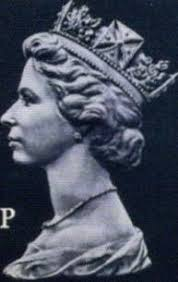 |
| eBay UK | GB 1977 - QUEEN ELIZABETH II - LARGE USED £1 MACHIN | eBay UK | 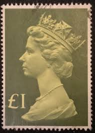 |
| Brassington Bros | Brassington Bros | Shoe Shop in Stoke-on-trent | FREE UK DELIVERY | 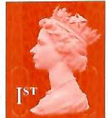 |
| TikTok | Chef royal #royalchef #clashroyale #supercellcreator #supercell | TikTok | 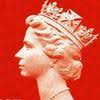 |
| Etsy | Great Britain 1986 One Pound 50p Fine Used Decimal High Value Stamp, From the 1977-87 Machin High Values Set. - Etsy | 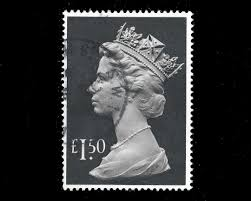 |
| allnumis.com | 43 Pence - Queen Elizabeth II, 1996 - Great Britain - Stamp - 4314 | 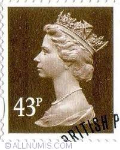 |
| serenechoo.com | serenechoo.com: Of Queens, English history and stamps | 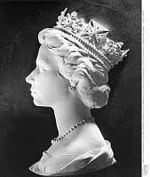 |
| PicClick UK | QUEEN ELIZABETH LONDON England UK 1977 Silver Jubilee Cloth Banner One Sided New £43.94 - PicClick UK | |
| eBay | GB 1998 Yvert C 1876 2£ booklet 1 x 20p + 7 x 26p | eBay | |
| Redbubble | The Queen Of England Elizabeth II Postal Stamp Souvenir" Poster for Sale by DavidLeeDesigns | Redbubble | |
| The Times | The Queen's reign told through 70 years of Sunday Times reporting | |
| The York Press | Stamps bearing the Queen's image remain valid | York Press | |
| DATABASE: Czeslaw Slania | ||
| eBay | GB 1978/79 Yvert C 605Aa 10p booklet 2 x 0.5p + 2 x 1p + 1 x 7p Oast Houses | eBay | |
| St James's House | The Queen at 90 – Publication set: Commemorative album and souvenir pr | |
| QEII SG U3920 5 blue machin stamp without ellipticals? | ||
| eBay | Liechtenstein Scott 509-11 FDC - Pioneers of Philately | eBay | |
| IG Stamps | SG1026b 1977-87 1 30 Tall Format Decimal Machin High Value Stamps |